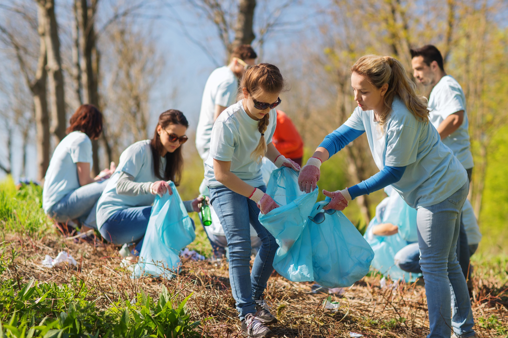

Does This Sound Familiar?
Ever have an idea on how to make a difference in the world but put it on the back burner?
You’re not alone. Many of us are incredibly busy, and feel exhausted by the end of the day.
Sometimes that great idea leaves us, and we end up spending free time browsing the internet or watching television.

The Reality
You’re looking for something greater than yourself. Something to do that will leave a mark and inspire others.
Most people want to create a meaningful impact in their community, but bringing ideas to fruition is tough.
We know things can be different. We wish to change the world. Make it better, kinder.
So what are we proposing?
A little experiment.
